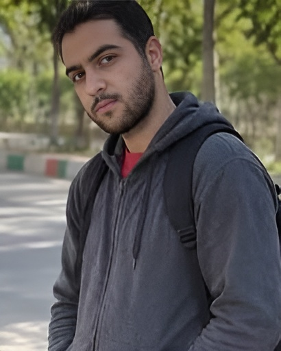

یاد و نام پوریا کیانی

روزهایی که بدون پوریا سپری شد
—روز
—ساعت
—دقیقه
—ثانیه
شوشتر، خوزستان
پوریا کیانی
جوانی اهل ایذه و ساکن شوشتر؛ نامی که یاد و زندگیاش در حافظه مردم این سرزمین باقی خواهد ماند.
۲۲ مهر ۱۴۰۱ · ساعت ۲۲:۰۰
روایت زندگی و یادبود
پوریا کیانی، جوانی اهل ایذه و ساکن شوشتر بود؛ جوانی که در روزهای نخست اعتراضات ۱۴۰۱، در میان معترضان شوشتر حضور داشت.
بر اساس روایتهای منتشرشده، پوریا در جریان اعتراضات مهرماه ۱۴۰۱ هدف شلیک مستقیم نیروهای امنیتی قرار گرفت و جان باخت.
همچنین گزارش شده است که پس از مرگ او، خانوادهاش تحت فشار قرار گرفتند تا علت درگذشت او «خودکشی» اعلام شود.
پوریا تنها یک نام در میان نامهای جانباختگان نیست؛ او جوانی بود با زندگی، آرزو و آیندهای که ناتمام ماند.
شجاعت، ساختن آیندهای است که شایسته جانهای پاک باشد.
یاد و نام پوریا کیانی گرامی باد.